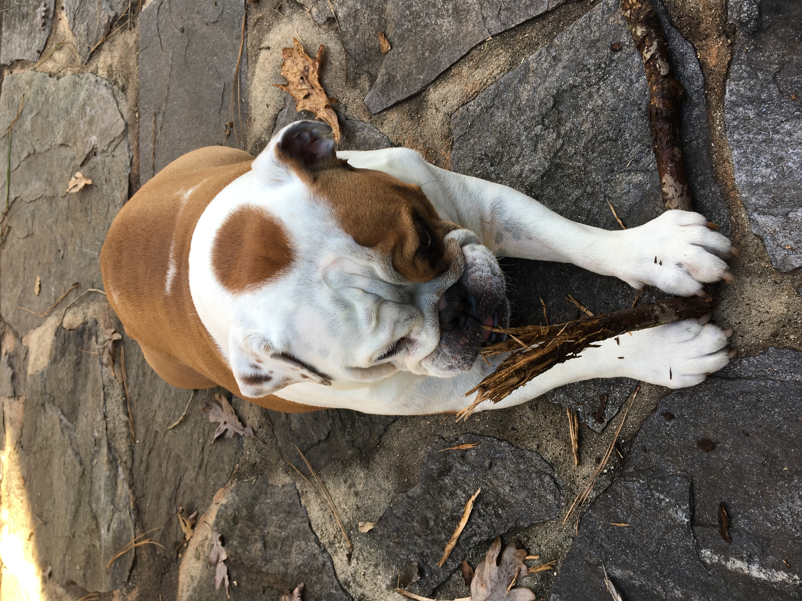
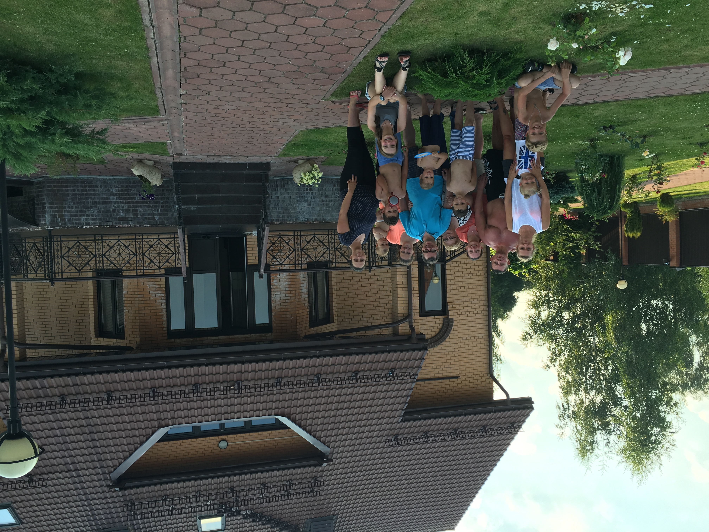
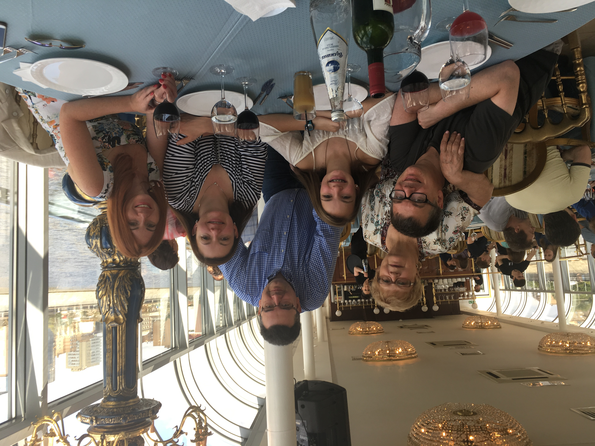
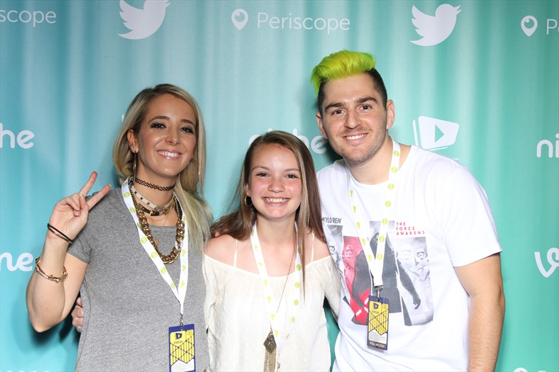
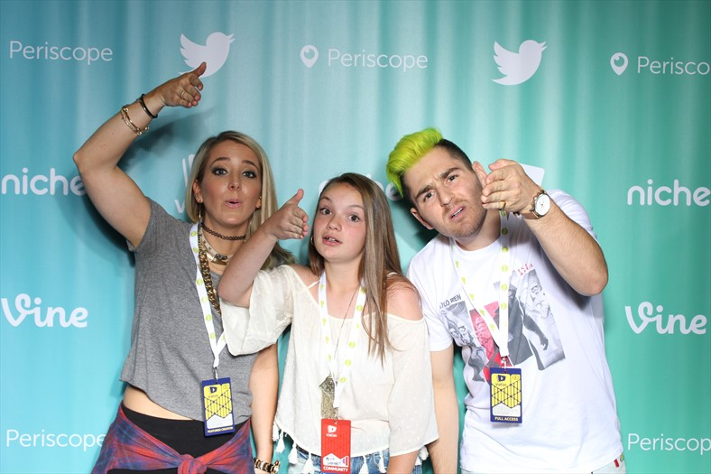
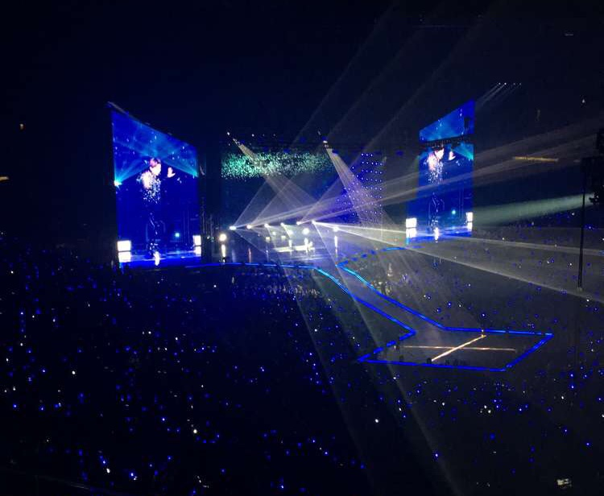
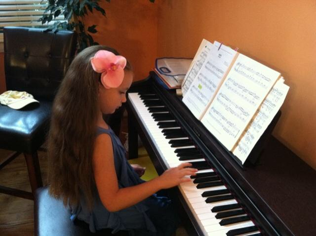

Fun Things About Me
Bio of Polina Vertegel by Polina Vertegel
I have one dog

My dog is an English Bulldog. Her name is Sonia and she is 2 years old. She is really sweet and cuddly and she likes to go outside. We got her in the summer of 2017. She loves to play with soccer balls.
My family is Russian

We speak Russian at home. I am first generation born in America in my family. The rest of my family members were born in Russia and either stayed there or, like my parents and my grandparents on my mom's side, immigrated to the US. All of my extended family lives in Russia, so I don't see them often.
My favorite YouTuber is Jenna Marbles

I've been watching Jenna's videos since I was in third grade, since 2011. I finally met her in 2016 along with her boyfriend, Julien. I think they are the sweetest and funniest people on YouTube. It's not easy to find genuine people like Jenna and Julien online anymore. Over the past 7 years, I watched them develop their content into something they love and I am so glad I've stayed with them for so long.
I love listening to music

Listening to music is one of my favorite things to do. My music taste is very flexible, as in I like a lot of different types of music, so I will literally listen to anything. It doesn't matter what genre it's in. I've also played piano for 11 years, so I think that also increased my knowledge in music and helped me appreciate music more.